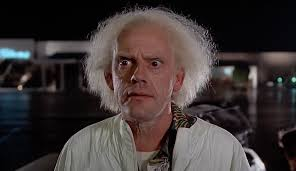

Michael J. Fox como Marty McFly, um estudante do ensino médio e aspirante a músico. Apesar de sua boa aparência e de sua gentileza e habilidades como skatista e guitarrista, Marty possui poucos amigos e é constantemente diminuído principalmente por Strickland, o diretor do colégio onde estuda.
Christopher Lloyd como Dr. Emmett Brown, um cientista excêntrico que faz experiências com viagens no tempo. Ele constrói uma máquina do tempo através de um Delorean e Marty é convidado a testar tal invento, o que culmina no mesmo ser mandado de volta ao tempo em que seus pais eram jovens. No passado, Marty se depara igualmente com uma versão mais jovem do Dr. Brown, que inicialmente duvida da história de Marty, mas logo percebe que seu experimento da viagem no tempo havia dado certo e assim, ele tenta motivar Marty a fazer com que seus pais se apaixonem e também vai tentar levar o rapaz de volta para sua época com segurança, aproveitando a tempestade na torre do relógio que acontecerá na noite do baile. Tal raio será a energia necessária para que o Delorean consiga viajar no tempo.
Lea Thompson como Lorraine Baines McFly, uma adolescente de 1955 que se torna a infeliz e alcoólatra mãe de Marty. No passado, Lorraine supostamente se apaixonaria por George quando este, que a estava espionando com um binóculo, cairia de uma árvore para o meio da rua, onde seria atropelado pelo pai dela e tratado pela própria, o problema é que Marty interfere neste primeiro encontro, salvando George e sendo atropelado em seu lugar, o que faz com que Lorraine se apaixone inicialmente pelo próprio Marty e nem sequer note o tímido George. Além disso, ela é alvo do interesse amoroso do valentão Biff, que a está constantemente assediando.
Crispin Glover como George McFly, um estudante nerd de 1955 que se torna o pai covarde e submisso de Marty. No passado, George é um rapaz inteligente, porém, tímido e bastante ingênuo, que é constantemente zombado por todos ao seu redor e vive sendo explorado por Biff e seus amigos, sentindo-se indefeso diante deles. Bastante solitário, George fará amizade com seu futuro filho Marty, que o motivará a lutar por seus ideais e ser uma pessoa melhor.
Thomas F. Wilson como Biff Tannen, um valentão do ensino médio de 1955 que se tornou o chefe de George em 1985. No passado, Biff é um jovem desordeiro e malcriado que vive aprontando com as pessoas ao seu redor, tendo como principal alvo de suas trapaças o inseguro George McFly, que é constantemente explorado e perseguido por ele e seus amigos; além disso, Biff vive assediando Lorraine, em quem insiste mesmo sendo constantemente rejeitado por ela. Afim de garantir que seus pais se apaixonem, Marty terá que enfrentar Biff e impedir que este atrapalhe seus planos.
Marc McClure e Wendie Jo Sperber como os irmãos de Marty, Dave McFly e Linda McFly
Claudia Wells como a namorada de Marty, Jennifer Parker